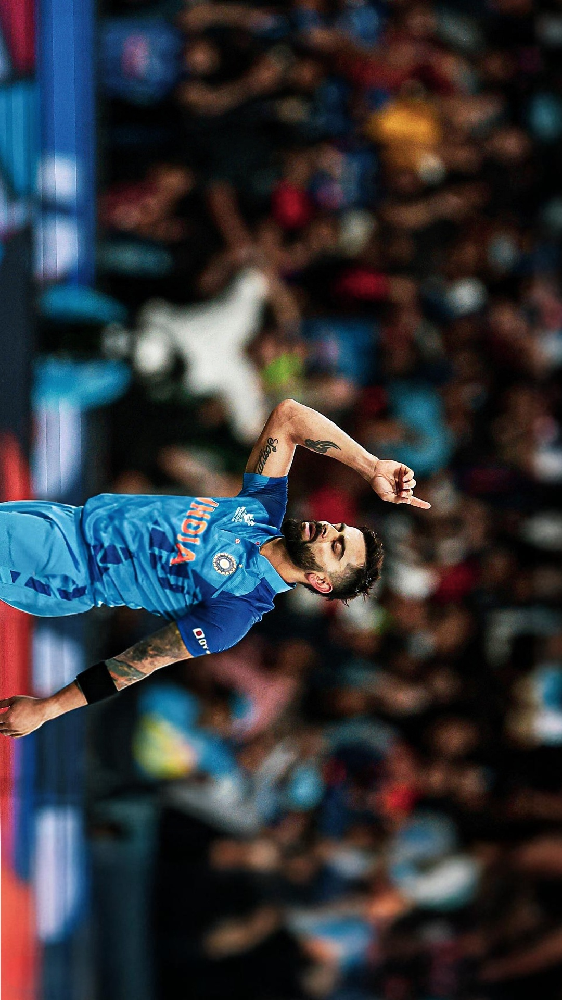
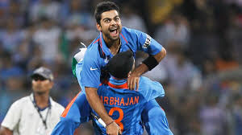
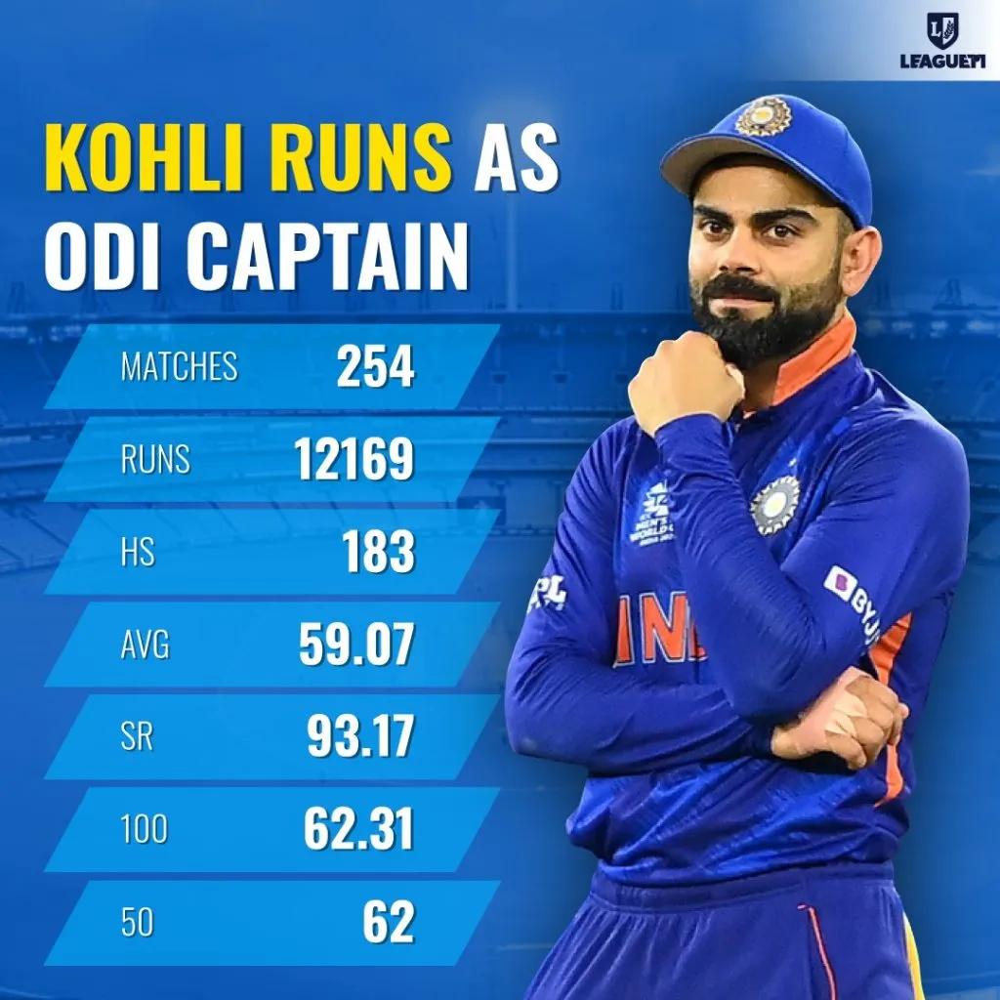
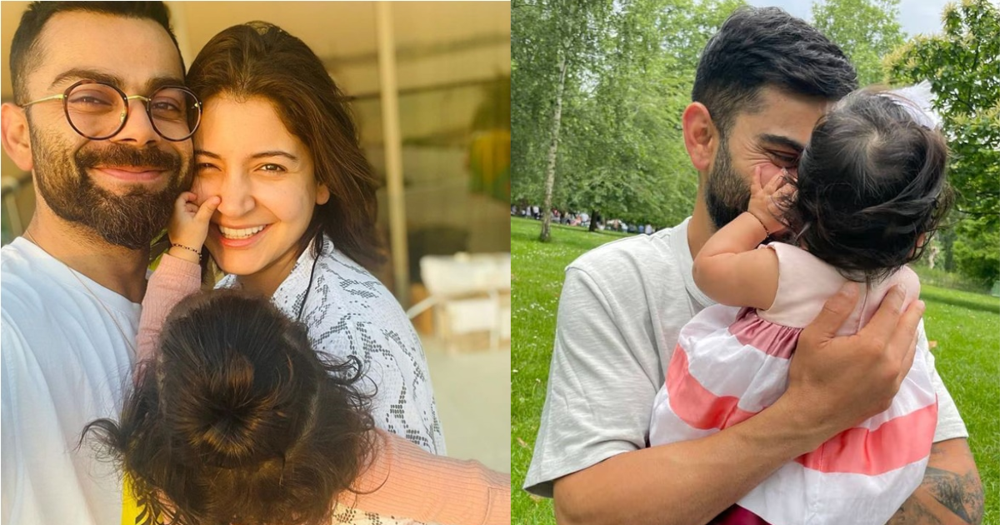

This page is dedicated to Virat Kohli, one of the best cricketers to have ever played the game. Let’s take a quick look at his journey, some memorable moments, and where to follow him on social media.
Virat Kohli is a top Indian cricketer known for his batting skills and leadership. From his early days in cricket to becoming one of the best in the world, he’s always been a player to watch.

Virat Kohli’s 82* against Pakistan in the 2022 T20 World Cup is one of the most iconic innings in cricket history.
Coming in at a challenging moment with India needing 160 runs to win and wickets falling around him, Kohli played an exceptional knock.
His calmness under pressure, along with his ability to find boundaries at crucial moments, guided India to victory in this thrilling match.
His 82 not out, which included 6 boundaries and 4 sixes, was a testament to his brilliance and composure, cementing his place as one of the best finishers in the game.
This innings will always be remembered as one of the most significant moments in T20 cricket.

One of his defining moments was playing a crucial role in India’s 2011 Cricket World Cup win. That win is still cherished by fans.

In 2017, Kohli took over as the captain of the Indian cricket team. Under his leadership, India achieved many significant victories across formats.
Virat is known for his consistency, scoring numerous centuries across all formats. His passion for the game is unmatched.

Off the field, Virat leads a wonderful family life with his wife Anushka Sharma and their daughter Vamika.
If you want to stay updated with everything Virat, check out his social media profiles:
Here’s a video of one of his most incredible innings. Enjoy!